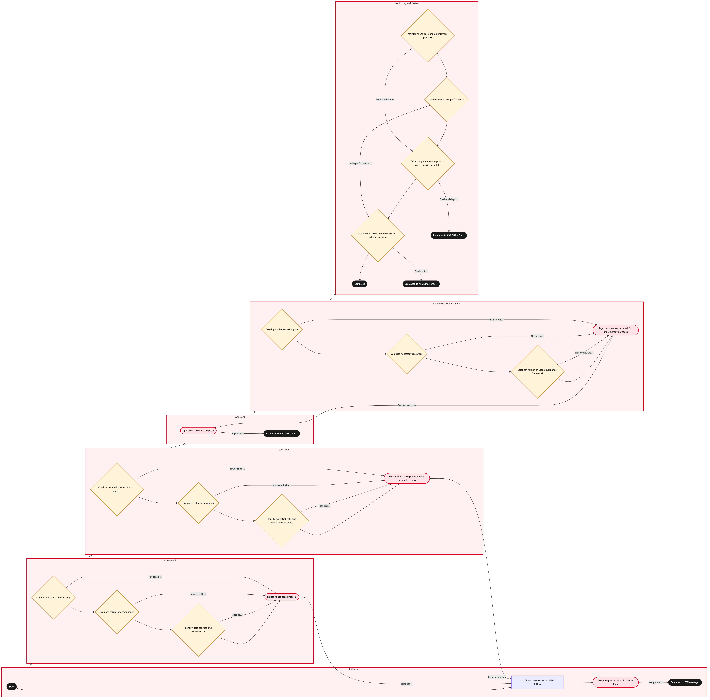

Updated 2026-08-21
AI Use Case Intake and Value Assessment
Process flow
Click to zoom

Process steps
▼
Phase 1 — Initiation
2 steps
| Step | Activity | Role | System | Input | Output | KPI | Dec | Exc | Pain point |
|---|---|---|---|---|---|---|---|---|---|
| 1.1 | Log AI use case request in ITSM Platform | ITSM Analyst | ITSM PlatformC | AI use case proposal | Logged request with unique ID | Request logged within 24 hours | N | N | Delays in logging can slow down the entire process. |
| 1.2 | Assign request to AI & ML Platform Team | ITSM Analyst | ITSM PlatformC | Logged request ID | Assigned task to AI & ML Platform Team | Task assigned within 1 hour | N | Y | Misassignment can lead to delays and confusion. |
▼
Phase 2 — Assessment
4 steps
| Step | Activity | Role | System | Input | Output | KPI | Dec | Exc | Pain point |
|---|---|---|---|---|---|---|---|---|---|
| 2.1 | Conduct initial feasibility study | Data Scientist | Databricks LakehouseB | AI use case proposal | Feasibility report | Study completed within 3 days | Y | N | Resource constraints can limit the depth of analysis. |
| 2.2 | Evaluate regulatory compliance | Legal Counsel | UNKNOWNU | Feasibility report | Regulatory compliance assessment | Assessment completed within 5 days | Y | N | Complex regulatory requirements can be challenging to navigate. |
| 2.3 | Identify data sources and dependencies | Data Engineer | Databricks LakehouseB | Feasibility report | Data source and dependency list | Dependencies identified within 2 days | Y | N | Inconsistent data sources can cause delays. |
| 2.4 | Reject AI use case proposal | AI & ML Platform Team Lead | ITSM PlatformC | Assessment results | Rejection letter to stakeholder | Rejection communicated within 1 day | N | Y | Rejected proposals can cause frustration among stakeholders. |
▼
Phase 3 — Validation
4 steps
| Step | Activity | Role | System | Input | Output | KPI | Dec | Exc | Pain point |
|---|---|---|---|---|---|---|---|---|---|
| 3.1 | Conduct detailed business impact analysis | Business Analyst | UNKNOWNU | Feasibility report and regulatory compliance assessment | Business impact analysis report | Analysis completed within 4 days | Y | N | Data availability can hinder business analysis. |
| 3.2 | Evaluate technical feasibility | Solution Architect | Integration PlatformU | Business impact analysis report | Technical feasibility assessment | Assessment completed within 3 days | Y | N | Integration challenges can delay implementation. |
| 3.3 | Identify potential risks and mitigation strategies | Risk Analyst | UNKNOWNU | Technical feasibility assessment | Risk assessment report with mitigation plans | Report completed within 2 days | Y | N | Unclear risk identification can lead to unforeseen issues. |
| 3.4 | Reject AI use case proposal with detailed reasons | AI & ML Platform Team Lead | ITSM PlatformC | Risk assessment report | Rejection letter with detailed reasons to stakeholder | Rejection communicated within 1 day | N | Y | Detailed rejections can be resource-intensive. |
▼
Phase 4 — Approval
1 steps
| Step | Activity | Role | System | Input | Output | KPI | Dec | Exc | Pain point |
|---|---|---|---|---|---|---|---|---|---|
| 4.1 | Approve AI use case proposal | CIO Office | ITSM PlatformC | Final assessment reports | Approval letter to stakeholder | Approval communicated within 2 days | N | Y | Delayed approvals can stall project timelines. |
▼
Phase 5 — Implementation Planning
4 steps
| Step | Activity | Role | System | Input | Output | KPI | Dec | Exc | Pain point |
|---|---|---|---|---|---|---|---|---|---|
| 5.1 | Develop implementation plan | Project Manager | AWSA | Approved AI use case proposal | Implementation plan with milestones and timelines | Plan completed within 3 days | Y | N | Resource allocation can impact implementation speed. |
| 5.2 | Allocate necessary resources | ITSM Analyst | ITSM PlatformC | Implementation plan | Resource allocation confirmation | Resources allocated within 1 day | Y | N | Over-allocation can strain existing resources. |
| 5.3 | Establish human-in-loop governance framework | Legal Counsel | UNKNOWNU | Implementation plan | Governance framework document | Framework established within 2 days | Y | N | Complex governance rules can complicate implementation. |
| 5.4 | Reject AI use case proposal for implementation issues | AI & ML Platform Team Lead | ITSM PlatformC | Implementation issues identified | Rejection letter to stakeholder | Rejection communicated within 1 day | N | Y | Implementation rejections can be costly. |
▼
Phase 6 — Monitoring and Review
4 steps
| Step | Activity | Role | System | Input | Output | KPI | Dec | Exc | Pain point |
|---|---|---|---|---|---|---|---|---|---|
| 6.1 | Monitor AI use case implementation progress | Project Manager | ITSM PlatformC | Implementation plan | Progress report to stakeholders | Report generated weekly | Y | N | Lack of visibility can lead to mismanagement. |
| 6.2 | Review AI use case performance | Data Scientist | Databricks LakehouseB | Implementation progress report | Performance review report | Review completed within 1 week | Y | N | Data quality can impact performance reviews. |
| 6.3 | Adjust implementation plan to catch up with schedule | Project Manager | ITSM PlatformC | Progress report and milestones | Updated implementation plan | Plan adjusted within 2 days | Y | N | Rapid adjustments can introduce new risks. |
| 6.4 | Implement corrective measures for underperformance | Data Engineer | Databricks LakehouseB | Performance review report | Corrective action plan and implementation status | Actions implemented within 1 week | Y | N | Ineffective corrective measures can lead to prolonged issues. |
Swim lanes
ITSM Analyst1.1 1.2 5.2
Data Scientist2.1 6.2
Legal Counsel2.2 5.3
Data Engineer2.3 6.4
AI & ML Platform Team Lead2.4 3.4 5.4
Business Analyst3.1
Solution Architect3.2
Risk Analyst3.3
CIO Office4.1
Project Manager5.1 6.1 6.3
Systems touched
ITSM PlatformCDatabricks LakehouseBUNKNOWNUIntegration PlatformUAWSA
Key performance indicators
- 95% of requests logged within 24 hours
- 80% of tasks assigned correctly on first attempt
- 70% of feasibility studies completed within 3 days
- 60% of regulatory assessments passed on first review
- 50% of AI use cases approved for implementation
Risks and control points
- Resource constraints leading to delays in the process
- Inconsistent data sources causing technical issues
- Complex regulatory requirements complicating approvals
- Integration challenges delaying project timelines
- Performance underperformance impacting business outcomes
Air Canada Process Wiki — process and systems reference compiled from public sources
for IT Application Management and User Support pre-sales discovery.
Built 2026-08-21. Every system carries an evidence tier: tier C is an industry pattern and tier U is an open
question, and neither should be asserted as fact about Air Canada without confirmation in discovery.
Not affiliated with or endorsed by Air Canada. Air Canada, Aeroplan and Altitude are trademarks of Air Canada.